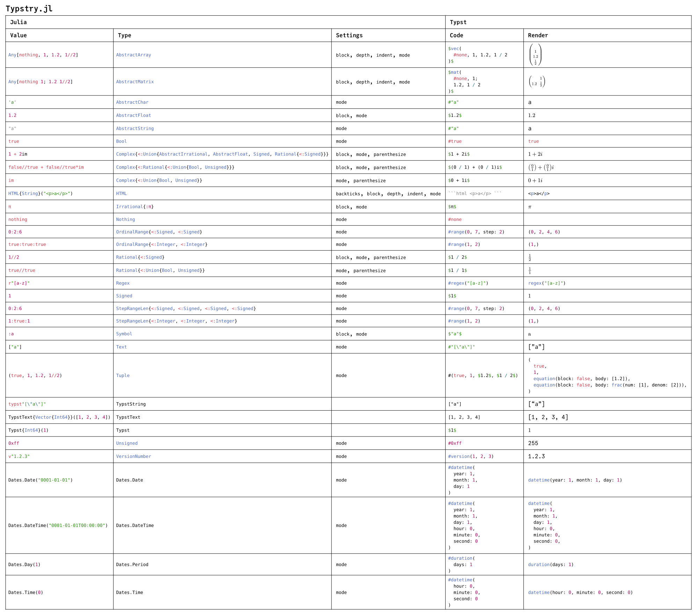
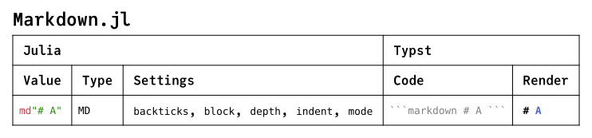
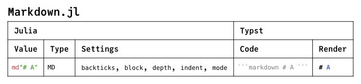

Typst Formatting Examples
This guide illustrates Typst formatting for supported types.
These Typst documents were generated from Julia using show_typst and compiled using a TypstCommand. Each row corresponds to a method of show_typst. The Settings correspond to those in a TypstContext. Note that additional settings may be used for component values, such as those in a container. The Typst columns contain the formatted value and its render. Sequential documents correspond to Package Extensions.
  
